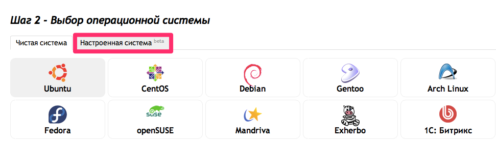

|
База знаний ::
Хостинг Clodo.ru ::
Clodo presets
ПресетыClodo.ru предлагает своим клиентам возможность создания сервера с преднастроенным ПО, чтобы сэкономить время для настройки инфраструктуры.
Что такое пресетПресет представляет собой сервер, с установленной ОС Debian и дополнительным набором программ, которые можно выбрать при установке системы. Доступные пресеты
Установка пресетаУстановка перестов доступна в меню выбора операционных систем. На шаге выбора ОС Вы можете выбрать настроенные системы, и среди них Вам будут доступны перечисленные CMS. 
Процесс установки пресетаПосле создания сервера, на него устанавливается ОС Debian. Как только процесс завершается, на сервере запускается набор скриптов для установки пресета, управляемые Opscode Chef. Chef - гибкий инструмент для развертывания и сопровождения ПО на серверах. Мы выбрали его не только потому что это наиболее подходящий способ управления автоматизированной установкой ПО на сервера, но и потому что это развивающаяся платформа, позволяющая нам открыто распространять рецепты. Сами же рецепты доступны в нашем github-репозитарии. Там вы можете не только ознакомиться с ними, но так же добавить свои рецепты и вносить правки в уже существующие. Если пресет не установилсяЕсли пресет не установился спустя 20-30 минут после создания сервера/переусановки ОС, то необходимо подключиться к серверу через ssh, и выполнить команду: Если данный процесс завершается с ошибками, и пройдя по IP адресу сервера CMS недоступна, сообщите об этом техподдержке. Условия использования документаМатериал представленный на данной странице может быть использован Вами по своему усмотрению. Разрешается копирование и распространение предоставленного материала без изменения содержания и без предварительного уведомления администрации Clodo.ru. Мы будем признательны Вам за сообщения об ошибках в представленной документации и за предложения об улучшении документации. По этим вопросам необходимо обращаться по адресу mail@clodo.ru. При обращении не забывайте указывать URL-адрес публикации. |
|
|
|
||||
|
|